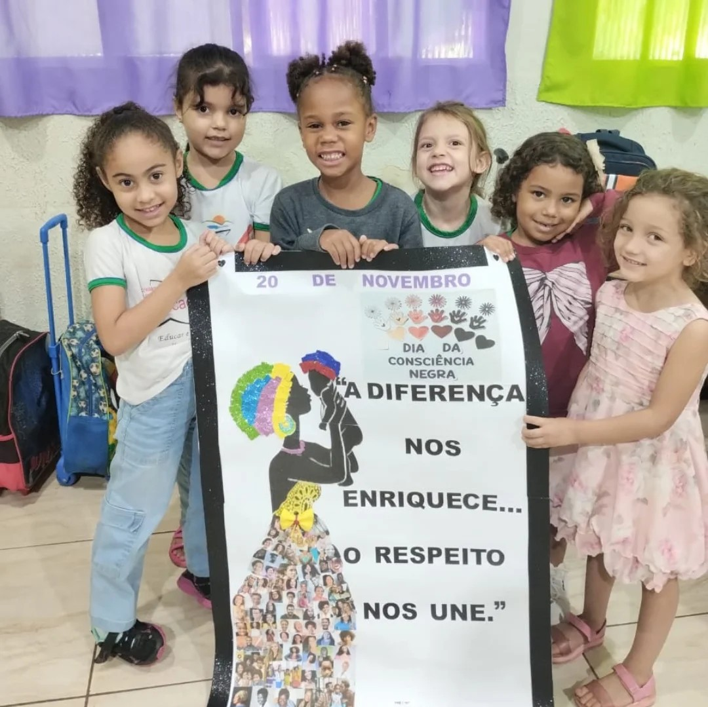

Escola Municipal Professor Moacir Pereira Borges
APRESENTAÇÃO
Fundada em 21 de março de 1975, a partir da doação de vários lotes para a Prefeitura Municipal de Itumbiara, na época representada pelo prefeito Ataíde Rodrigues Borges, pelo o senhor Ali Mustafa Karfan. Os lotes localizavam-se na Avenida Santa Rita, nº 815, Bairro Santa Rita, em Itumbiara estado de Goiás. Nestes lotes foram construída unidade escolar, com o nome de Escola Municipal Dom Velloso em homenagem ao primeiro bispo da Diocese de Itumbiara, Dom José Francisco Versiani Velloso. Essa unidade escolar foi reconhecida pela lei nº 260/75 de 30 de janeiro de 1975.
A escola foi construída no bairro para se tornar um referencial para a população carente do local, visto que nessa época era um território voltado mais para comércios e indústrias. Em 2006 ocorreu a reforma do prédio, com a ampliação de salas e cobertura do pátio.
No dia 14 de abril de 2015, a unidade escola teve seu nome alterado de acordo com a Lei de nº 4542 e passou a ser denominada Escola Municipal Professor Moacir Pereira Borges em homenagem há um secretário da Secretaria Municipal de Educação de Itumbiara.
SERVIÇOS
Oferecemos as seguintes turmas:
- Maternal, para crianças com 3 anos completos até 31/03 do ano em que a matrícula for realizada;
- Pré I, para crianças com 4 anos completos até 31/03 do ano em que a matrícula for realizada;
- Pré II, para crianças com 5 anos completos até 31/03 do ano em que a matrícula for realizada.
PROJETOS
- Projeto socioemocional.
- Projeto Educação e as Relações Etnico - Raciais.

- Projeto Primeira Infância.
- Projeto Horta Escolar.
- Projeto Artinfância "Reciclarte: A arte de Reciclar.